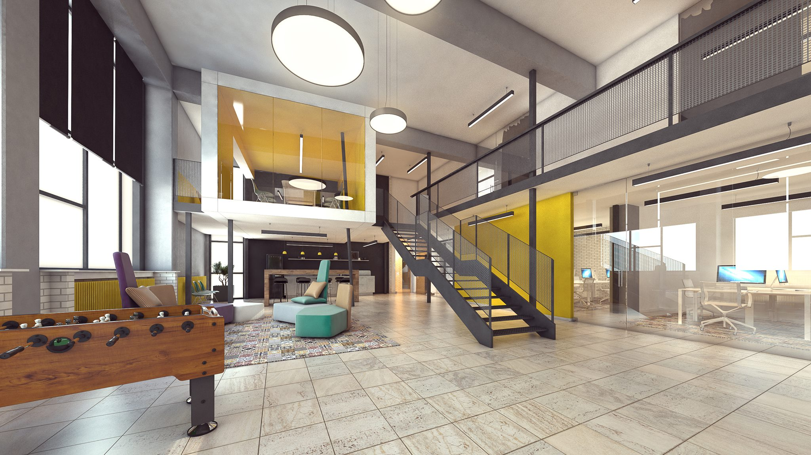

Startup centar Niš

Adresa: Aleksandra Medvedeva 14, 18000 Niš
www: www.startupcentarnis.org
Površina: 600m²
Radnih mesta: 24
Mesta za studente: 12
Oprema za primenjeni naučno-istraživački rad: Da
Mentorska i savetodavna podrška: Da
Edukacije i radionice: Da
Sala za sastanke: Da
Sala za prezentacije: Da
Biblioteka: -
Kuhinja: Da
Parking: -